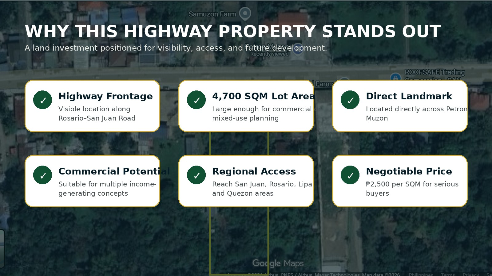
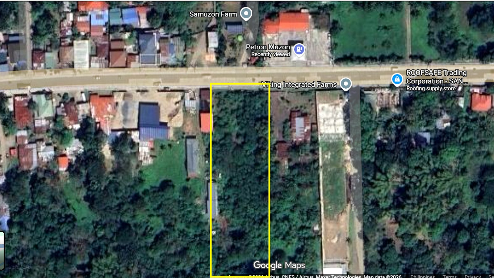
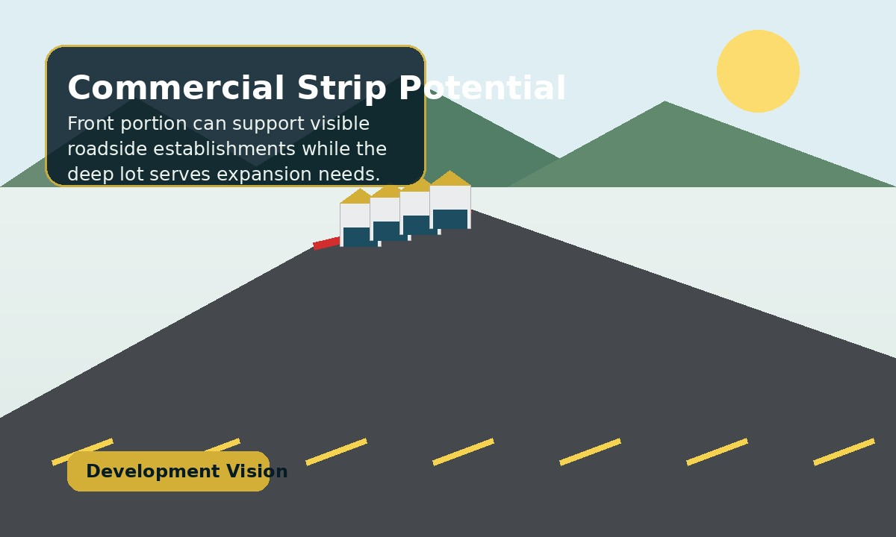
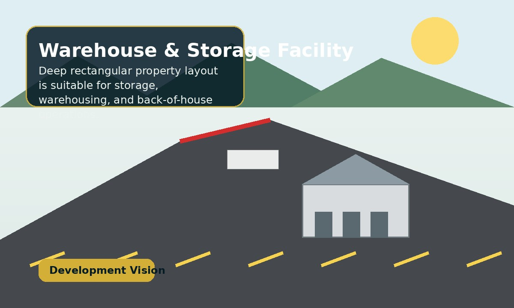
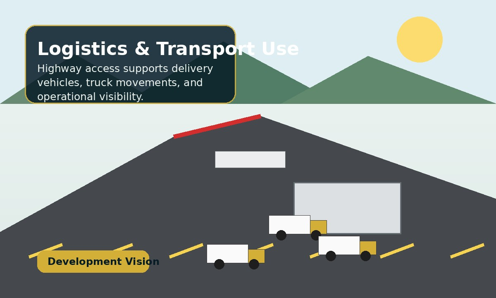
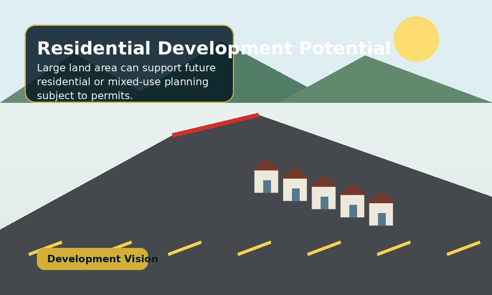
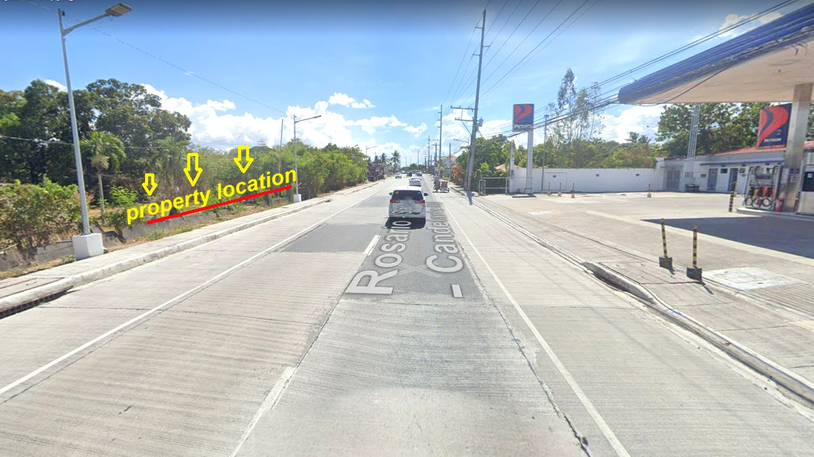
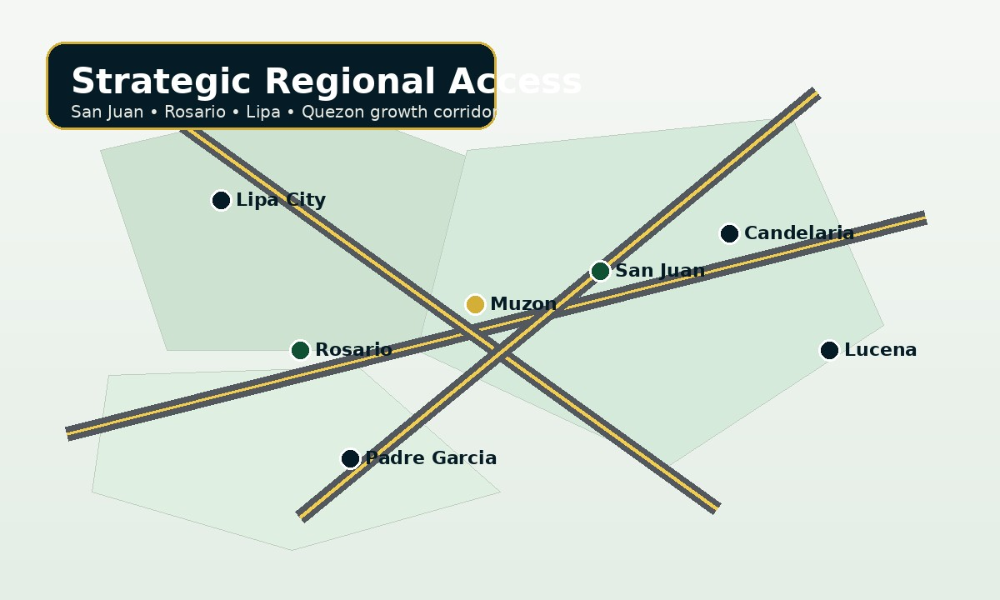

Total lot area
Commercial • Residential • Investment
4,700 SQM Highway Property in San Juan, Batangas
A strategic land investment along Rosario–San Juan Road, Brgy. Muzon, directly across Petron Muzon.
4,700 SQM₱2,500/SQMNegotiableMother Title — Subdivided
Investment Snapshot
₱11.75MTotal Price
Main RoadFrontage
Brgy. MuzonLocation
Petron MuzonAcross Road
Property Overview
Built for investors who value visibility, access and land potential.
This property is positioned as a land investment opportunity, not a typical residential listing. Its value is in the main-road exposure, sizable land area, and commercial/residential flexibility.
Along Rosario–San Juan Road
San Juan, Batangas
Negotiable for serious buyers
Subdivided property
Commercial / residential potential


Actual Property View
Long rectangular land profile with road exposure.
The lot extends deep toward the rear, making it useful for operations that need a visible front area and larger back-area function such as storage, service yard, warehouse, or future residential planning.
- Roadside frontage for business visibility
- Deep layout suitable for operational use
- Accessible from San Juan and Rosario routes
- Good landmark reference for buyers and visitors
Development Vision
What can buyers imagine for a 4,700 SQM highway property?
These are visual planning concepts only. Actual development will depend on zoning, permits, engineering, and buyer plans.

Commercial Strip Potential
Visible frontage for retail, food, services, or roadside business use.

Warehouse & Storage
Deep lot profile works well for storage and back-of-house operations.

Logistics / Transport Use
Highway access is useful for delivery vehicles and business movement.

Residential Development
Potential for residential or mixed-use planning subject to approvals.
Actual Roadside Reference
Directly across Petron Muzon, with easy landmark recognition.
For marketing and site viewing, a recognizable roadside landmark helps buyers locate the property quickly. This is especially helpful for investors coming from outside San Juan.
Note: Petron is used only as a location landmark. The property being sold is the lot across the road.

Location Advantage
Strategic access between San Juan, Rosario and nearby growth areas.

Nearby areas to target
Useful for Facebook Ads and buyer outreach:
San JuanRosarioTaysanPadre GarciaLipa CityBatangas CityCandelariaSariayaLucena City
Actual Site Visuals
Use real photos and maps to build buyer trust.
Buyer Questions
Frequently asked questions
Is the property still available?
Yes, the property is available unless marked SOLD.
Where is the property located?
Brgy. Muzon, San Juan, Batangas, along Rosario–San Juan Road, directly across Petron Muzon.
How large is the property?
Total lot area is 4,700 SQM.
How much is the selling price?
₱2,500 per SQM, total price ₱11,750,000, negotiable for serious buyers.
What is the title status?
The property is under a Mother Title and already subdivided.
Can I schedule a site viewing?
Yes. Site viewing can be arranged by appointment.
Are payment terms available?
Payment terms may be discussed with qualified buyers.
Ready to evaluate the property?
Schedule a site viewing for this San Juan highway lot.
Request the locator map, viewing schedule, and complete property details.